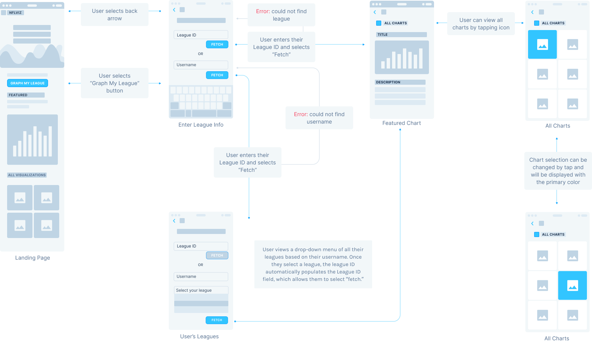
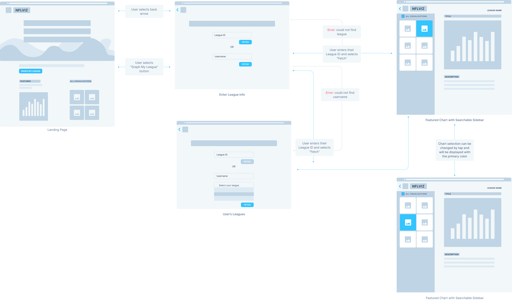

NFLVIZ
Football meets data viz

NFLViz.com is a site dedicated to using football data to display custom fantasy visualizations. I collaborated with the developer to prepare for an early 2021 launch. Together, we went through the design process to create and implement the NFLViz brand.
"NFLViz is a data visualization site. The plan is for the site to become a one-stop shop for all things football."
After learning more about the mission of NFLViz, I set out to understand my role. We needed to design a responsive data visualization site that allows for future scalability. More so, I needed to create the NFLViz brand.
While I’m definitely not new to football (#KeepPounding), my first step was to evaluate who NFLViz is aimed toward. After reviewing several football sites, data visualization sites, and having some informal conversations with various fantasy football players, I classified 2 main users that we would want to target:
Keeping in mind the layouts of some popular apps, we wanted our user flow to be simple. Data in general can be intimidating to deal with, so we wanted to make sure our site exemplifies ease. With some feedback, I settled to create a more in-depth flow, trying to minimize screens and pathways for the user.
 Once we understood how we wanted the user to navigate the site, I created some sample, lo-fi designs.


When we took a look, we could see which features worked and which didn’t, which helped us see we were heading in the right direction.
Check out the prototype here or below!
Working on my first UX/UI project taught me a lot about the design process,
particularly the importance of iteration and user feedback. It's one thing to look at a product from a
designer's perspective than a user's, which was really emphasized in this project.
My definition of the word "research" truly expanded over the course of this project. While I would normally be
accustomed to reading scientific journals and talking to professors, my research for this project came directly
from aspects of my everyday life. Now, whenever I'm using an app or a webpage, I'm finding that I'm noticing
more and more details than I used to.
My last and most important takeaway is understanding the field. Understanding how to make a universally
appealing design was challenging and not something I was used to. It really helped to make quick sketches and
show them to the developer, which both helped me understand more about the creation process and get direct
feedback.
Check out our latest designs on NFLViz.com!